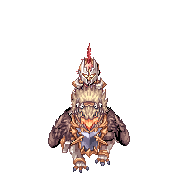
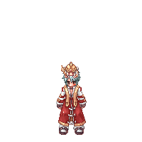
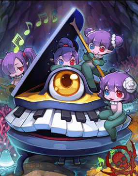
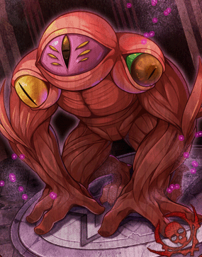
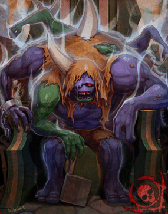
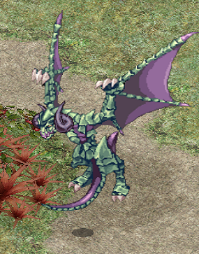
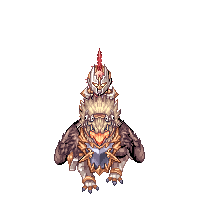
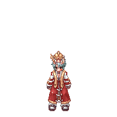
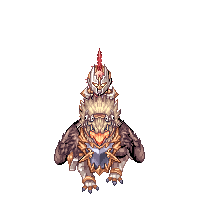
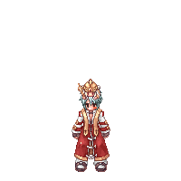

Menu
(página atual)
Sistema de Pet
Classes
Arcano
Arcebispo
Bioquímico
Cavaleiro Rúnico
Feiticeiro
Guardião Real
Insurgente
Invocador(Doram)
Kagerou
Mecânico
Musa
Oboro
Renegado
Sentinela
Sicário
Shura
Soul Reaper
Star Emperor
Superaprendiz
Trovador
Guia de classes
Meu perfil
Instâncias
 
Viajem Rápida: Instâncias fracas

Sonhos e sombras
Pianinho

Maldição de Glast Heim
Amdarais

Sussurro Sombrio
Stefano J. E. Lobo
Anterior
Próximo
Viajem Rápida: Instâncias fortes

Caçando Monstros
Garronath
Maldição de Glast Heim
Amdarais
Sussurro Sombrio
Stefano J. E. Lobo
Anterior
Próximo

 


